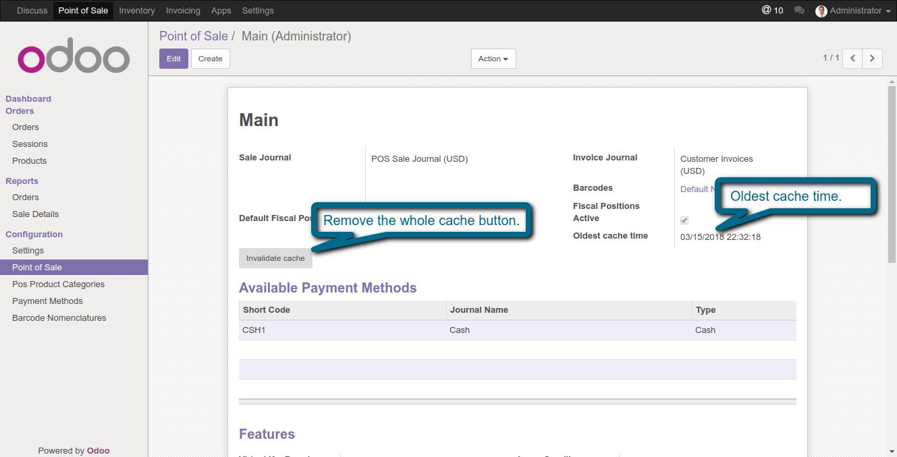
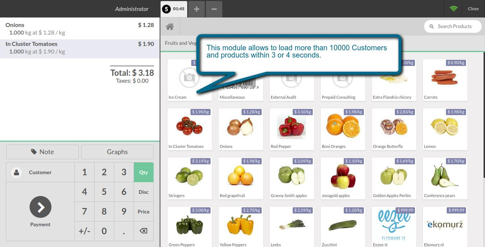

Point of Sale Advanced Cache
Easy way to reduce heavy data loading time in pos
Features
- This module reduce POS data loading time. 10000 Products and 10000 Customers will load within 1 or 2 Sec.
- Cache will automatically update when we edit or create product.
- Not take more time to update cache.
1. Point of sale cache configuration.

2. This module allows to load more than 10000 Customers and products within 1 or 2 seconds.

If You Need Any Help Please Contact
Email Id: dev.webveer@gmail.com